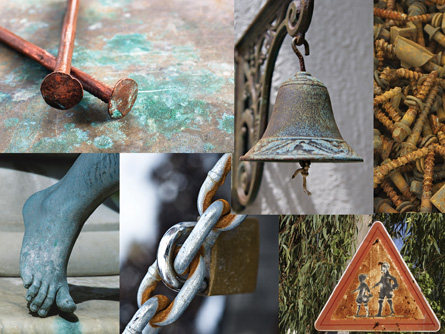

top left: © Mikhail Olykainen/shutterstock
top middle: © Paul Picone/shutterstock
all others: © 2008 Jupiterimages Corporation
Metals are fantastic materials to use for structural components or for decoration. Sometimes, however, metals react when they are exposed to air, water, or other substances. In some situations the reaction decreases the performance of the object. In extreme cases, metal fatigue or failure can have drastic consequences, such as when metal fatigue causes a large structure to collapse.
A great deal of scientific work and technological development has gone into studying metals and into preventing metal corrosion. If you consider how many of the objects you use involve metals, you will understand why so much attention is placed on understanding corrosion.
In Module 3 you will investigate the following questions:
Remember that each lesson will also be organized around questions intended to guide your study. As you proceed through Module 3, you may record answers to these questions and any interrelationships that exist between them in a concept map or graphic organizer. More information is available in the Unit B Concept Organizer. In the Module 3 Summary you will receive further information on how you can use your concept map or graphic organizer to review the concepts you studied in this module.